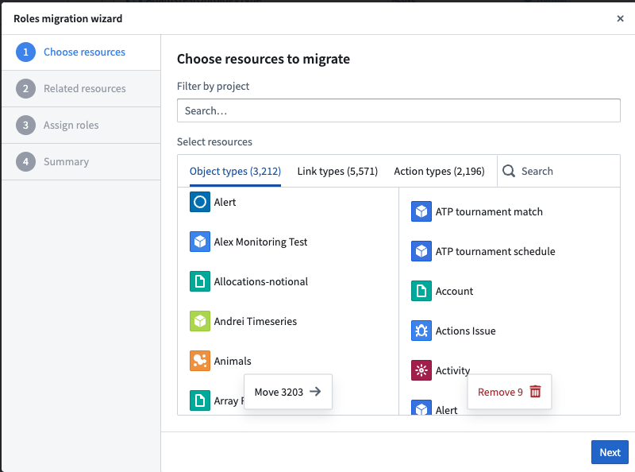
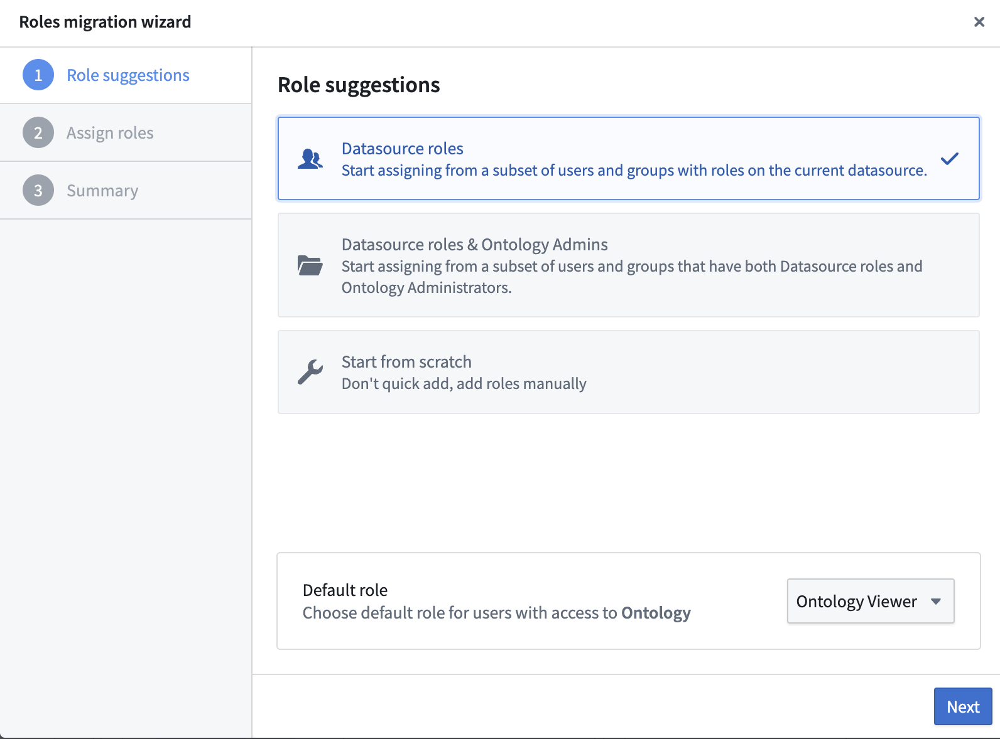
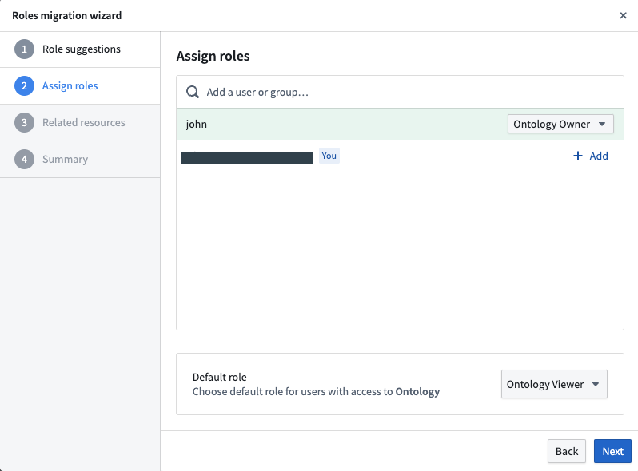
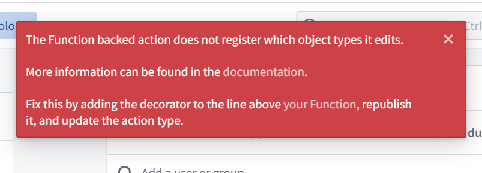

:::callout{theme="neutral" title="Legacy"} This page describes a legacy process that is no longer the most up-to-date method for ontology resource permissioning. Ontology resources can now be permissioned using the Compass filesystem. To migrate over, review the migration guide. :::
Ontology roles is a legacy authorization model for ontology resources, replacing datasource-derived permissions. Ontology roles apply to object types, link types, and action types, which are referred to as âontology resourcesâ. Ontology roles are required to use the most recent features of the ontology, including shared property types, interfaces, and more. By default, ontology roles have been used on all new enrollments created since September 2023.
Ontology roles allow you to grant roles directly on each Ontology resource and to their metadata. All metadata permissions are managed in Ontology Manager. Ontology roles allow you to decouple Ontology resources (like an Aircraft object type) from the data of these resources, such as object instances (like a specific plane represented as an Ontology object) and link instances; these data instances remain governed by their input datasource permissions. Learn more about Ontology permissions.
Each Ontology is linked to one or multiple Foundry organizations.
Roles permissions are detailed in the Ontology roles documentation.
:::callout{theme="neutral"} Every object type, link type, and action type migrated to ontology roles will have view permission for all users that have access to that particular ontology. Therefore, ontology resource information is accessible for all users of that ontology. :::
There is no explicit ordering required for migrating ontology resources to ontology roles, making it possible to have a mix of object types using datasource-derived permissions, and others using ontology roles. Therefore, for the purpose of this migration, we define able to edit an object type as follows:
Editor permission on the input datasources for that object type.Ontology Editor permission on the object type and do not require any permissions on the input datasource. Users should note that this only allows editing Ontology resources and their metadata and does not grant any permission on the data/datasource itself. Access to object data (not metadata) is still governed by the permissions granted on input datasources.If Ontology roles are enabled on your enrollment, but you have not yet migrated the Ontology resources that you own to the roles authorization model, you will see a banner in Ontology Manager that prompts you to do so. Alternatively, when looking at the tables of Ontology resources, you can filter to the ones you own that are still using the "Same permissions as backing datasource".
:::callout{theme="neutral"} Ontology roles are not yet available for all Foundry enrollments. If you do not have access to Ontology roles, contact Palantir Support. :::
To perform the migration, users must have the following permissions:
Permissions to make changes in the Foundry Ontology.
The following permissions for each individual resource:
Owner permission on the input datasource.Viewer permissions on both object types referenced in the link type are required, and the user must be an Owner on the link type itself or at the Ontology level.Owner permission on the input datasource of the link type.:::callout{theme="neutral"} Additional permissions are required for modifying action types after migrating to Ontology roles. You will need permissions on any object types the action type edits, and on the action type itself, to modify action types with roles. :::
Migration to Ontology roles is managed through Upgrade Assistant. A dedicated Upgrade Assistant task displays the list of Ontology resources that must be migrated, along with assignees that have permission to perform the migration. Opening a resource from Upgrade Assistant directs the user to the Security tab of the resource to migrate it within the Ontology Manager application.
If a user has permission to set Ontology roles, Ontology resources that have not yet migrated will appear in the migration interface in the Security tab to set Ontology roles for the first time. After the Ontology resource is migrated, the Ontology role picker is displayed under the Security tab and can be updated by Ontology Owners.
There are two ways to migrate Ontology resources (object types, action types, link types) to Roles: bulk migration of Ontology resources or one-by-one migration for all Ontology resources.
You can bulk-migrate Ontology resources to Roles. Refer to the list of prerequisites before proceeding. You can only migrate 500 resources at a time.
To bulk-migrate, go to Advanced in the Ontology Manager and select continue with migration assistant in the Migrations section.
The migration wizard will appear with the following steps.

:::callout{theme="warning"} When you acknowledge the implications of the migration, you are acknowledging that the permissions previously derived from backing datasources will be overwritten by the newly assigned role grants and that the migration is irreversible. :::
Some action types cannot be bulk-migrated without further steps.
Action types cannot be migrated to roles if:
@edits decorators before the migration.To address these issues, go to the Action Types page and filter down to Same permissions as backing datasource, which will display the action types that have not been migrated because of issues. Resolve all outstanding issues and then proceed with bulk migration again for any remaining action types.
:::callout{theme="warning" title="Warning"} When migrating action types, ensure that permissions are only granted to users with sufficient context on both the referenced object types and all use cases where the action type is deployed. :::
From the Ontology Manager home page, select the Ontology resources that you want to migrate (object type, link type, or action type) and filter by Security setup to Same permissions as backing datasource and by permissions = owner.
Select the entity to migrate, then choose either Migrate to roles on the header or Start using roles on the Security tab.
The migration wizard will appear with two suggested role options: Datasource roles and Ontology admins and datasource roles. These options allow users to use and configure roles that align with their existing Ontology setups. Selecting one of the options pre-fills the list of suggested roles; these roles can be changed later.
Editor or Owner role on the input datasource.Ontology Administrators user group and have an Editor or Owner role on the input datasource.The image below shows the roles suggestion in the migration wizard:

Choose the desired role suggestions, review the suggested Ontology roles and the default role for the object type, then make modifications if necessary. Next, view the summary, acknowledge the implication, and complete the migration to apply the roles.
The image below shows how to assign roles in the migration wizard:

You may be prevented from attempting the migration of an action type to Roles if:
@edits decorators before the migration.When these issues have been resolved, you will be able to migrate the action types to Roles.
If you no longer need an ontology resource that requires an action, you can delete the resource using the Ontology cleanup tool. This tool helps you identify which object types are safe to delete based on a set of criteria (for example, if the datasource is trashed, the deprecation date has passed, the index is failing, whether they are using Ontology roles or not, and so on.)
Function-backed action types require the backing Function to be migrated. Foundry will attempt to migrate Functions automatically, allowing you to migrate the action type as well. Some Functions, however, might not be migrated automatically and require manually declaration of the edited object types in the Functions. Check the FAQ section if you see failures in your Function-backed actions after migrating an action type to Ontology roles.
Users may have access to metadata on object types and link types in the Ontology Manager that they could not previously view because they did not have Viewer access to the input datasources. This does not mean they will get access to the data in the input datasources which is always governed by the roles on those datasources. The specifics of what metadata they will be able to see is determined by their Ontology role.
Object Explorer will also update the permission checks for editing Object Views when an object type is migrated. Before an object type is migrated, a user needs to be in the Object View Administrators group and have Editor access to the input datasources to edit Object Views. After an object type has been migrated, Object Explorer will only check that the user has Ontology Editor permissions on the object type itself.
If Foundry failed to automatically detect the object types an Ontology Edit Function is editing, the action will fail after submission with the following error.

To resolve this error, follow the steps explained in the Functions documentation.